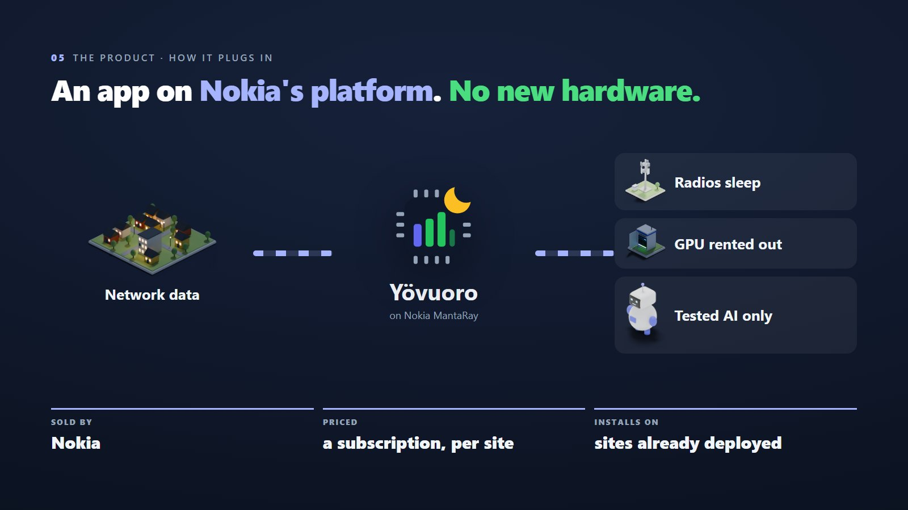
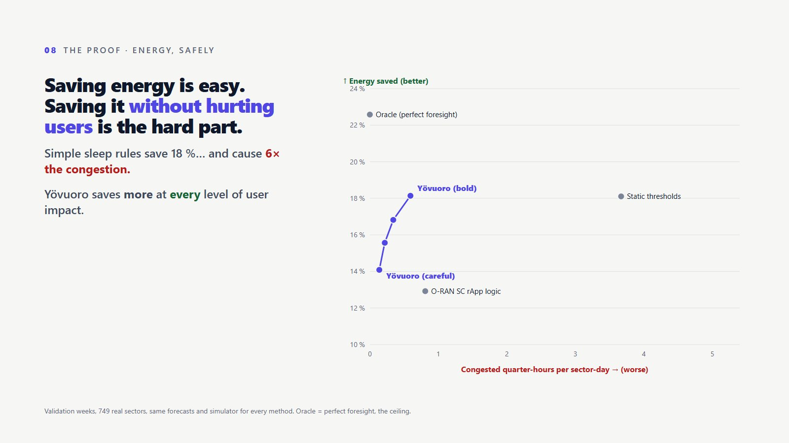
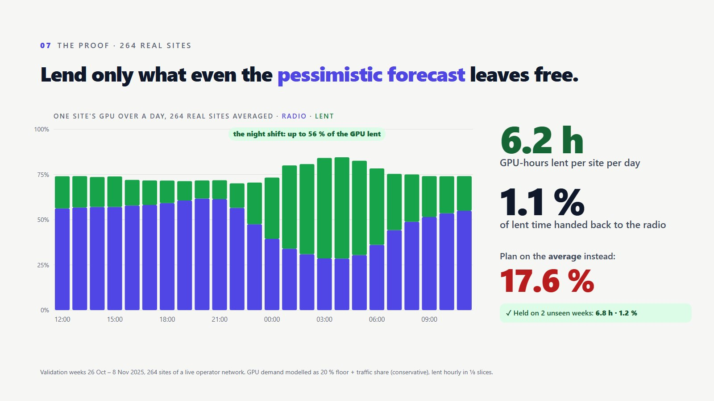
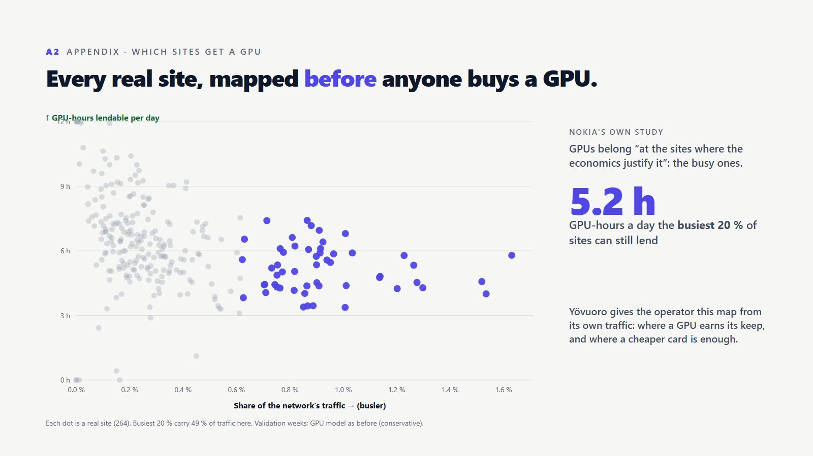
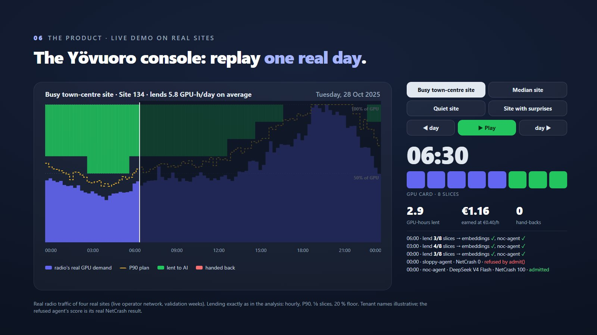

Yövuoro
- The problem
- The product
- Data
- The forecaster (the AI)
- Sleeping radios safely
- Lending the GPU
- AI agents, testing and admission
- Business case
- Limitations and what the pilot must prove
- Reproducibility and sources
1 · The problem
Nokia is moving its RAN onto GPUs: Nvidia invested $1 B in Nokia (Oct 2025), and Nokia's AI-RAN platform launched in July 2026 with pilots this year and commercial availability in 2027. Operators push back on power, cost and return. Orange's CTO, Bruno Zerbib, called it a "risky architecture change" for "zero benefits" (Light Reading, 23 Nov 2026); Vodafone and VMO2 voiced similar doubts. Nokia's RAN CTO calls monetisation "the tough part".
Nokia's own answer is to share the GPU: its white paper The value-creating fusion of AI and RAN describes "utilizing RAN computing power for other AI workloads when mobile traffic is low" and AI work "scheduled into low-traffic hours of the RAN"; its AI-and-RAN page offers spare capacity "under a PaaS or GPUaaS model". What is missing is how much can be lent, with what guarantee, and to whom. Nobody will risk the radio without that.
At the same time the radios themselves waste the night: a 5G 3.5 GHz capacity radio draws measured 88 % of its energy just by being switched on (72 % for mid-band), whatever the traffic.
2 · The product
Yövuoro is software: an rApp on Nokia MantaRay SMO, sold by Nokia per site (as an add-on to the AI-RAN software subscription or as a share of GPU rent). No new hardware. Three pillars on one brain:
| Pillar | What it does | Result |
|---|---|---|
| Sleep | Switches off capacity radios when the cautious forecast says the coverage layer can carry their users; wakes them before the rush. | 18.1 % radio energy saved at a sixth of static rules' congestion |
| Lend | Every hour, leases the GPU slices (⅛ each) the radio will not need to AI tenants; evicts them the moment real demand rises. | 6.2 GPU-h/site/day, 1.1 % evicted (test: 6.8 h, 1.2 %) |
| Admit | Only AI jobs and agents with a signed crash-test result for their exact model get on; every lease and eviction gets a signed receipt (billing, audit). | 0-score agent refused by admit() |
| Brain | Quantile forecast (P10/P50/P90) of every site's traffic, 10 h ahead, calibrated; plans always use the cautious P90. | P10–P90 coverage 80–81 % on unseen weeks |

3 · Data
| Source | What | Status |
|---|---|---|
| Lehoczký et al., Scientific Data (2026), doi:10.1038/s41597-026-07723-0; dataset doi:10.5281/zenodo.17815388 (CC BY 4.0) | 15-minute performance counters from a live commercial 2G/4G/5G network: per-carrier PRB load, downlink volume, radio-unit and baseband energy. We use 749 sectors on 264 sites, 31 Aug – 22 Nov 2025. | measured |
| 3GPP TR 38.864 | Sleep-state power levels and transition energy for radio units. | published |
| Nordic day-ahead prices, Fingrid CO₂ | Electricity price and emission factor (used for € and CO₂). | measured |
| GPU demand of the RAN | Not published by anyone. Modelled as floor + (1 − floor) × site traffic / site capacity (section 6). | modelled |
Splits, fixed before any result: train 31 Aug – 25 Oct · validation 26 Oct – 8 Nov · locked test 9 – 22 Nov (run once, at the end, with the frozen method). Data quality issues found and fixed are logged (e.g. timestamps labelled UTC were local time; per-carrier calibration masks).
4 · The forecaster (the AI)
A gradient-boosted (LightGBM) quantile model per layer (mid-band LTE 1800 + NR 2100, NR 3500, low-band LTE 700/800) predicts each sector's downlink volume for the next 40 quarter-hours (10 h) at P10, P50 and P90. Features: recent levels, same quarter-hour one day and one week earlier, time of day and week. It is re-fitted weekly on all past data and calibrated with rolling Mondrian conformal offsets by local hour, so the P90 really is exceeded about 10 % of the time.
| Layer | Skill vs seasonal naive, validation | Skill, locked test | P10–P90 coverage, validation | Coverage, test |
|---|---|---|---|---|
| Mid-band (LTE 1800 + NR 2100) | +29.9 % | +29.5 % | 80.2 % | 81.2 % |
| 5G 3.5 GHz | +27.8 % | +29.4 % | 80.0 % | 81.3 % |
| Low-band (LTE 700/800) | +36.2 % | +18.8 % | 83.6 % | 79.6 % |
Skill = reduction in mean absolute error of the P50 vs "same quarter-hour last week". Target coverage 80 %. The low band is weaker on unseen weeks: an honest caveat; it does not drive GPU lending, which is dominated by mid-band and 5G traffic.
Why AI: fixed rules react to the load they see now; the forecast sees the next ten hours and how uncertain they are. That uncertainty band is what lets Yövuoro promise a tenant a guarantee.
5 · Sleeping radios safely
An exact dynamic-programming planner per sector chooses, quarter-hour by quarter-hour, which capacity radios sleep, re-planned hourly. A sleep is allowed only if the coverage layer that receives the users stays under its limit at the P90 forecast; switching energy is counted so radios do not flap; a watchdog wakes everything if real load exceeds the limit. Energy uses a per-radio-unit model fitted on the measured energy (R² 0.92 / 0.96 / 0.84) and 3GPP sleep states.
| Method (validation, 749 sectors) | Radio energy saved | Congested ¼-h per sector-day | Traffic pushed past capacity | Emergency wake-ups |
|---|---|---|---|---|
| Static load thresholds (industry rule of thumb) | 18.1 % | 3.67 | 6.2 TB | 38 471 |
| O-RAN SC energy-saving rApp logic | 12.9 % | 0.81 | 2.0 TB | 8 478 |
| Yövuoro planner (P90) | 18.1 % | 0.59 | 1.8 TB | 6 214 |
| Yövuoro, careful margin 1.5 | 14.1 % | 0.14 | 0.9 TB | 1 444 |
| Ablation: plan on P50 instead of P90 | 20.0 % | 3.16 | 5.4 TB | 33 088 |
| Oracle (perfect foresight, ceiling) | 22.6 % | 0 | 0 | 0 |
measured traffic and energy; moved traffic re-routed to the coverage layer with measured per-band efficiency modelled. Same forecasts, simulator and watchdog for every method.

6 · Lending the GPU
Model modelled
- One GPU per site (Nokia's AI-RAN plug-in card in the AirScale baseband), shared by the site's sectors.
- Radio GPU demand = floor + (1 − floor) × site traffic / site capacity; capacity = the site's 99.5th-percentile traffic on the training weeks (the GPU is sized for the busy hour). Floor 20 % (also run at 10 % and 30 %).
- Every hour, Yövuoro leases whole ⅛ slices for the next hour: lease = ⌊(1 − max P90 demand − reserve) × 8⌋ / 8. If real demand + lease exceeds the GPU in any quarter-hour, the tenant is evicted for that quarter-hour.
Evidence the model is conservative: measured baseband compute is a fixed floor plus a linear term in traffic (Tran et al., arXiv 1706.06251: CPU % = 21.4 + 0.62 × throughput); on Nvidia Aerial L1 the radio uses at most ~35 % of the GPU's SMs and under 20 % at most operating points (Weaver, arXiv 2609.35276); Nvidia's own AI-RAN proof of concept capped the RAN at 40 % of a GH200 (arXiv 2501.09007). We assume peak traffic fills 100 %.
| Setting (floor 20 %) | GPU-h lent / site / day | Lent time evicted | GPU utilisation (radio only → with tenants) |
|---|---|---|---|
| P90, no extra reserve (headline) | 6.2 | 1.1 % | 49 % → 75 % |
| P90 + ⅛ reserve | 4.0 | 0.40 % | 49 % → 65 % |
| P90 + ¼ reserve | 2.3 | 0.19 % | 49 % → 58 % |
| Plan on P50 (ablation) | 8.6 | 17.6 % | 49 % → 85 % |
| Sensitivity | P90: GPU-h / evicted | P50: GPU-h / evicted |
|---|---|---|
| Floor 10 % | 7.2 h / 1.2 % | 9.7 h / 19.1 % |
| Floor 30 % | 5.3 h / 1.1 % | 7.5 h / 16.5 % |
| Radio peaks at 60 % of the GPU | 12.2 h / 0.85 % | 13.3 h / 11.3 % |
| Radio peaks at 40 % (as measured in the literature) | 15.3 h / 0.65 % | 15.7 h / 9.2 % |
| Locked test weeks, headline setting | 6.8 h / 1.2 % | 8.9 h / 16.3 % |
| Locked test weeks, radio peaks at 40 % | 15.5 h / 0.67 % | 15.8 h / 8.4 % |
Planning on the cautious P90 is consistently ~13–15× safer than the median at every setting. Night profile: up to 56 % of the GPU lendable at 03:00–05:00, 10–14 % in the evening peak.

Which sites get a GPU
Nokia's own commissioned study (Chetan Sharma Consulting, Sep 2026) recommends GPUs "at the sites where the economics justify it". In our network the busiest 20 % of sites carry 49 % of traffic and can still lend 5.2 GPU-h/day; sites with 5G 3.5 GHz lend 5.5 h. Yövuoro produces this map from an operator's own counters before any GPU is bought.


7 · AI agents, testing and admission
Agents connect through an MCP server (12 tools: read KPIs, forecasts, prices, events; simulate; propose plans). They add value only where a forecast is blind: synthetic a football derby ending 22:30 (crowd surge injected on real traffic, 12 episodes). An LLM agent (DeepSeek V4 Flash) reading the event calendar removed 92 % of the derby's extra congestion (congested quarter-hours 163 → 97; perfect calendar reader 91) for 0.1 point of savings, at €0.04 per 31-sector night.
The same calendar is an attack surface. NetCrash runs each agent × model through hostile nights (alarm-text injection, missing KPIs, unknown outcomes, fake confirmations, protected cells, budget loops, credential and subscriber-data leaks, calendar injection), 3 runs per test. Results differ by model (e.g. calendar-injection test: DeepSeek V4 Flash 100, Mistral Small 3.2 33, GPT-OSS-120B 33; a deliberately sloppy agent 0). Results are signed (in-toto, DSSE, Ed25519) and checked by admit(), compatible with agent-trust-kit test vectors. A deterministic arbiter enforces hard invariants no prompt can change (receiving layer fits at P90, protected cells never sleep, blast radius, scope, and for lending the radio reserve).
8 · Business case
| Line | Value | Basis |
|---|---|---|
| GPU time lent | ≈ €360 / site / yr | 2 270 GPU-h × €0.40 × 40 % sold (cloud RTX PRO 6000: $1.5–3/h, Nov 2026) |
| Radio energy saved | ≈ €330 / site / yr | 2.68 kWh / sector-day × 2.8 sectors × 365 × €0.12/kWh |
| Value per AI-RAN site | ≈ €700 / yr | |
| Operator, 10 000 AI-RAN sites | ≈ €7 M / yr | and ≈ 7 000 t CO₂ / yr on an EU-average grid (~250 g/kWh) |
| Nokia's share (~20 %) | ≈ €1.4 M / operator / yr | add-on to the AI-RAN software subscription, or share of GPU rent; plus agent certification |
| Running cost | ≈ €1.40 / site / yr | LLM agent; compute negligible. GPU electricity for sold hours ≈ €20–55 / site / yr |
| Build | 3 engineers × 6 months | productise on MantaRay SMO + one pilot cluster |
| Market | AI-RAN ≈ $35 B by 2030 | Dell'Oro, via Fierce Network |
Customers and delivery: operators buying Nokia AI-RAN; Nokia sells it inside the deal. First tenant for the GPU time is the operator's own night-time AI (network agents, analytics, model retraining). Pilot candidate: Elisa, which already runs AI workloads alongside voice and data on Nokia AI-RAN (Nokia Q3 2026 call). Nokia's CEO Justin Hotard: AI-RAN "allows telcos to get more from their existing infrastructure"; Yövuoro is that "more".
9 · Limitations and what the pilot must prove
- GPU demand is modelled. No public GPU traces exist; the pilot's shadow phase measures real L1 GPU load against traffic. Published measurements suggest our numbers are a floor.
- One network, one season. 264 Slovak sites in autumn 2025. Same method on a Finnish network is the next test.
- Low-band forecast skill drops on unseen weeks (+36 % → +19 %).
- Sleep savings are radio-unit energy vs always-on; not comparable to vendor figures measured on top of existing features.
- Event scenarios are synthetic surges on real traffic; GPU rental price and sell-through are assumptions.
- Quarter-hour eviction is a budget, not enforcement: slot-level isolation (MIG / Green Contexts; e.g. ScaleRAN, Beaver) enforces it in microseconds.
10 · Reproducibility and sources
Pipelines: analysis/night_shift.py (GPU lending), analysis/headroom.py, analysis/site_map.py, analysis/fit_test.py + analysis/gpu_test.py (locked test weeks), on the open-source Yövahti prototype (forecaster, planner, MCP server, NetCrash, admit()). Decisions, findings (including what went wrong) and every source are logged in docs/.